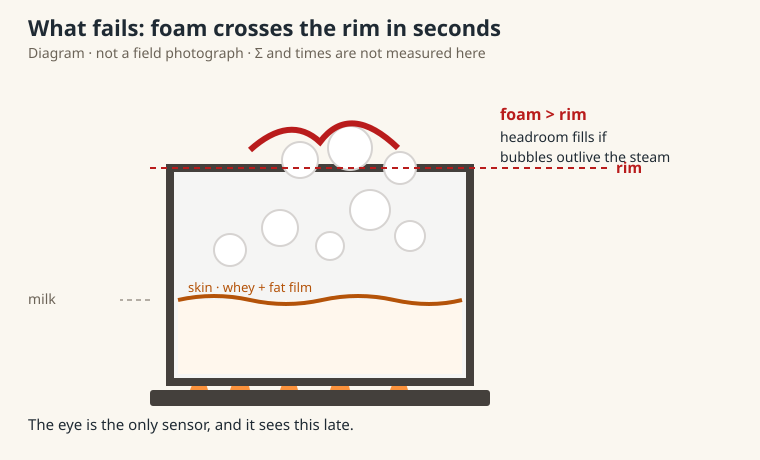
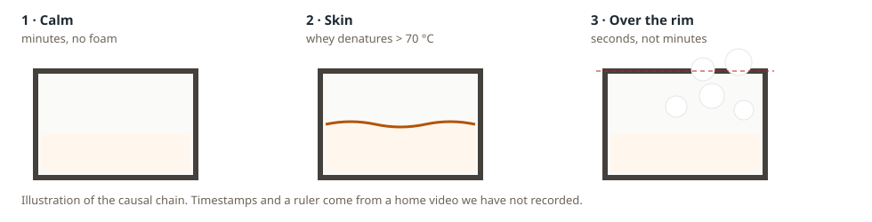
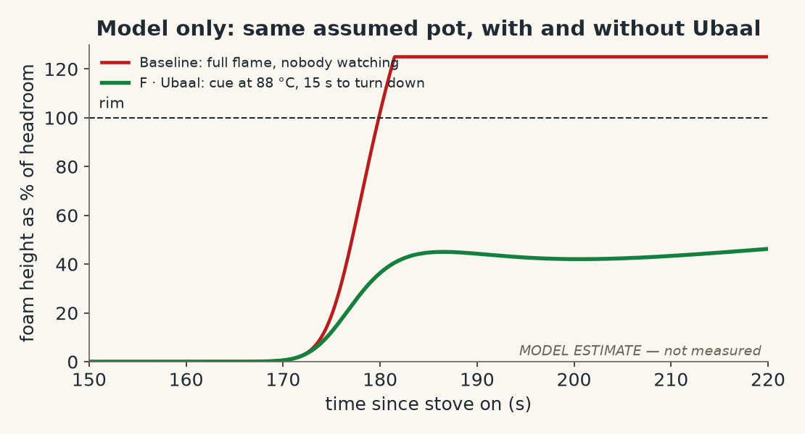
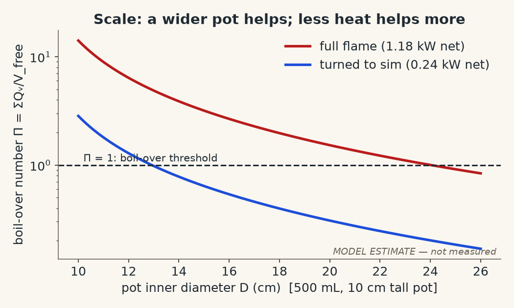
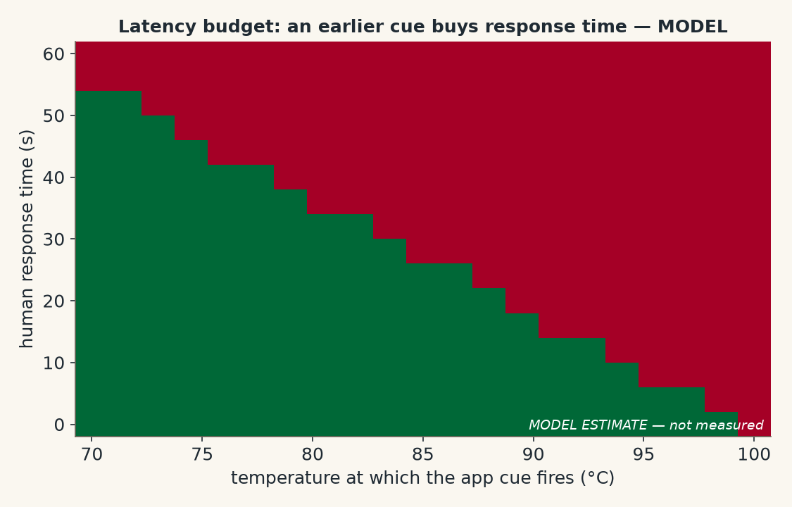
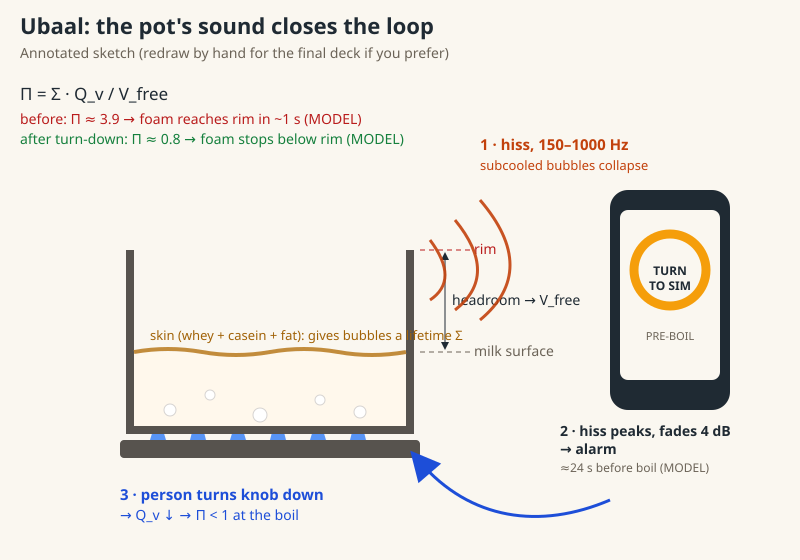
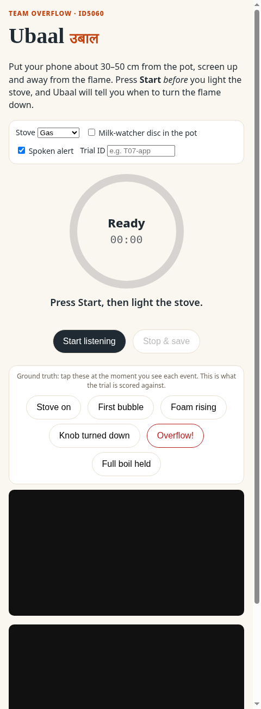
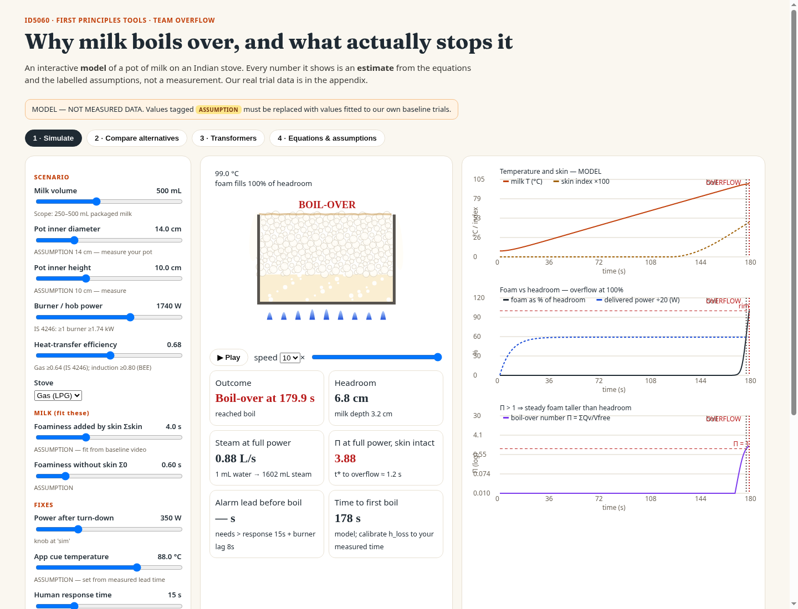

Milk sits calm for three minutes, then climbs over the rim in seconds. Every common fix needs someone standing at the stove. We rebuilt the problem from first principles. The fix is not a better pot. It is a phone that listens.
Get 250–500 mL of packaged milk to a full boil on a gas or induction stove at home, without watching the pot.
Kitchen: not recorded in this build (n = 0). UNTESTED
Model, 14 cm pot: first boil to overflow ≈ 2.2 s. MODEL
Milk foams over; water at a full boil does not (New Scientist 2020; ATK).
boil-overs in 10 unattended trials

Diagram of the failure, not a photograph. Home-trial frames replace it. Protocol: 09_HOME_TRIAL_KIT.
Vinay Chekuri · EE22B026 (representative)
Vinnay Gupta · ED22B073
Atharva Chinchalkar · BS22B010
Information loop today: eyes → brain → hand on knob. It only works while someone is watching. The pot gives a visible warning only seconds before the spill.

Illustration of the chain. Timed frames need our own video.

Foam vs time for the assumed pot. MODEL A measured curve is not in this build.
| Familiar belief | What we found |
|---|---|
| "The skin causes it" | The skin raises bubble lifetime. Overflow needs lifetime × steam rate > room. |
| "Use a bigger pot" | It delays the spill. Prevention needs about 24 cm at full flame (model, ATK). |
| "Someone must watch" | The pot makes sound before it boils, so a phone can listen. |
| "Low flame always works" | Only if Π < 1 at the moment of boiling. Timing matters. |
Bubble lifetime × steam rate ÷ room to grow. Π > 1 ⇒ boil-over.
Qv = P/(ρvhfg). With our assumed Σ, Π ≈ 3.9 at full flame in a 14 cm pot. MODEL
Insight: At 1.18 kW the pot makes ≈0.9 L of steam per second from 0.5 g of water. A 1 L headspace fills in about 1.2 s if no bubble bursts.
Rebuild: Watching for foam is too late. The warning must come before the boil.

Insight: A wider pot delays the spill. Cutting P moves Π more, and costs nothing.
Insight: It is a cliff, not a slope. Arriving at the boil with Π just under 1 is enough. You do not need zero heat, only less heat before the boil.
Insight: Swap the sensor. The pot gets loudest in the hiss before it boils (kettle data: peak at 60–70 °C, >10 dB quieter by 95 °C), so a phone can hear the boil coming.
| Alternative | Term | Transformer | Score |
|---|---|---|---|
| F · Ubaal phone app: alarm, then turn to sim | Qv (timed) | Change Frame | 85 |
| H · Ubaal + milk-watcher disc (₹295) | Qv + Σ | + Perturb | 83 |
| B · Heat-flux rule: sim before the boil | Qv | Approach a Limit | 81 |
| G · Auto power cut (sensor hob or relay) | Qv | Change Frame | 79 |
| C · Milk-watcher disc alone | Σ | Perturb | 78 |
| E · Silicone flower lid (€34.95) | Vfree | Scale | 70 |
| A · Wider pot | Vfree | Scale | 69 |
| I · Double-walled milk boiler | Qv | Change Frame | 65 |
| D · Spoon, stirring, butter | Σ | Perturb | 64 |
Weights: prevents unattended 30 · no watching 15 · cost ≤ ₹300 15 · full boil 10 · taste 10 · clean 10 · gas + induction 5 · testable by us 5. Scores are team judgements with evidence (appendix). F stays the winner in 15 of 16 ±50 % weight perturbations.

Latency budget MODEL: an earlier cue leaves more time to respond.

Annotated sketch (replace with a hand-drawn version if preferred)
Why it should work: in the model the alarm comes in the subcooled phase, 24 s before the boil. That clears the assumed 15 s response. Turning down then drops Π below 1, so the foam settles under the rim. Both times are model estimates.

Ubaal listens, alarms, and logs the trial.

Simulator runs the energy, skin and foam equations.
Unattended means the tester stays out of sight and moves only when the alarm sounds. Planned arms: baseline ≥ 3, Ubaal v1 ≥ 5, then v2 only after a frozen config. Run so far: n = 0 milk trials. Ground truth, when it exists, is video with a ruler in the pot. What we did test: the state machine on synthetic audio, and the model on one assumed pot.
Model, same pot: baseline crosses the rim 2.2 s after first boil. Ubaal’s cue at 88 °C leaves a 24 s lead and foam stops near 52% of the headroom. MODEL
Not measured. Boil-overs baseline —/— vs Ubaal —/—. The primary outcome, 0 of 10 unattended boil-overs, is untested.
Logic tests, synthetic audio: 3 of 3. Hiss → PRE-BOIL, then BOILING. Disc rattle → BOILING. Steady noise → no alarm. These check the code, not milk. LOGIC
What we could see: no labelled kitchen recording, so there is no v1 miss or false alarm to fix.
What we kept: drop 4 dB, peak held 5 s, 8 s noise calibration. Tuning on synthetic audio would fake a refinement.
Next change: one noise-only clip and one boil, then search dropDb and minPeakHoldS for the longest lead with zero false alarms.
Target stays 0/10. No kitchen count yet. UNTESTED
If the cue is at 88 °C and the turn-down takes 15 s. MODEL
+ ₹295 optional disc (Amazon.in, 21 Nov 2026). Under the ₹300 limit.
Close the loop. On induction, a relay or the hob's own API cuts power at PRE-BOIL. That is the G route, which needs no human. Then train a small on-device classifier on our labelled recordings.